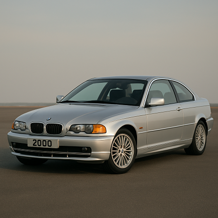

2000-talets utveckling
Under 2000-talet tog bilindustrin ett stort teknologiskt kliv. Elektroniken blev en självklar del av fordonen med funktioner som GPS, antisladdsystem och farthållare. Designen blev mer strömlinjeformad, bränsleeffektivitet prioriterades och miljövänliga alternativ som el- och hybridbilar började ta plats på allvar.
Från muskel till miljö
Efter årtionden av fokus på hästkrafter och design förändrades bilens roll. Miljökrav, nya teknologier och förändrade konsumentvanor styrde utvecklingen mot effektivitet, säkerhet och hållbarhet.
Bilen i det nya millenniet
Med starten på 2000-talet förändrades spelplanen. Internetuppkopplade system, självkörande teknologier och ett ökat miljöfokus drev innovationen framåt. Tillverkare som Toyota, BMW och Tesla